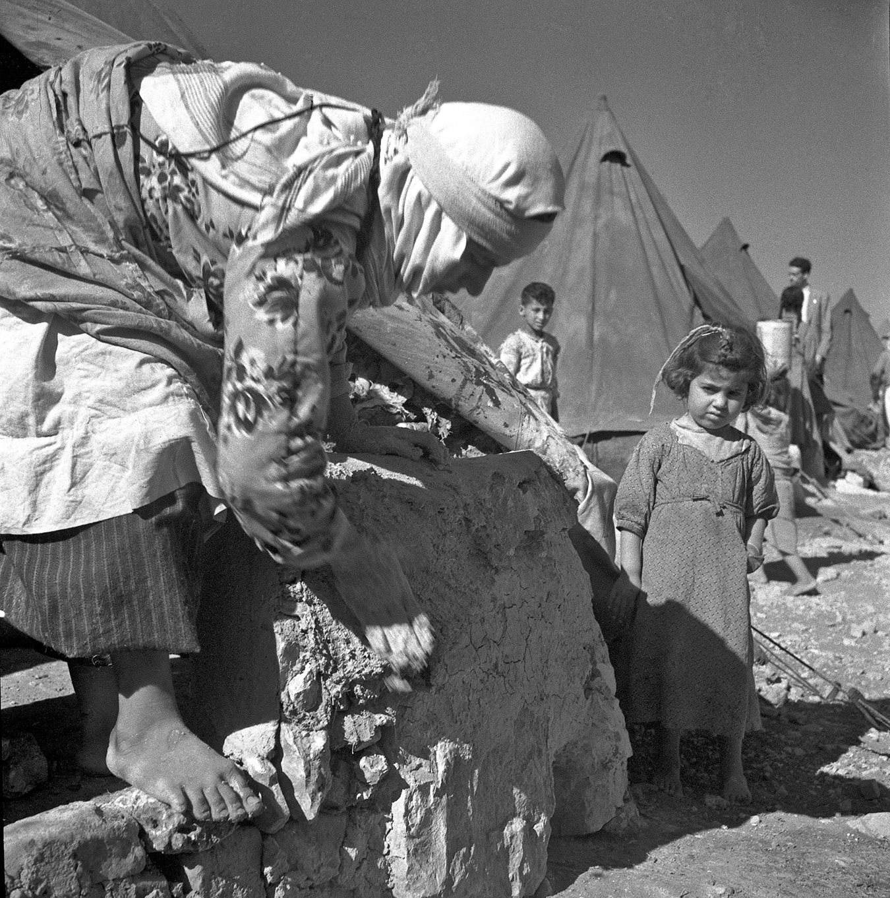
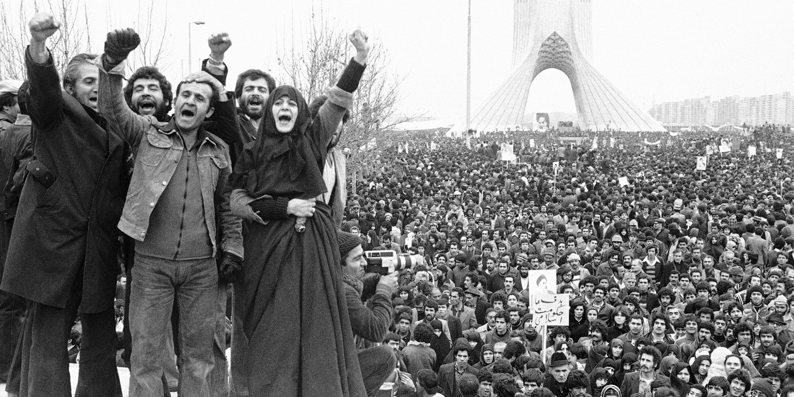

Part II: U.S. Policy in the Middle East During and After the Cold War
Scroll
Scroll
Down
Introduction
Following World War II, the Middle East played an increasingly important role in U.S. foreign policy. In addition to protecting its economic interests, the United States competed with the Soviet Union, took on the role of managing regional stability, and at times sought to further democratic ideals abroad.
The underlying motivations for U.S. intervention in the Middle East have not always matched policymakers’ stated goals. In this section, consider what motivated U.S. involvement in each instance. Some factors to consider include: the quest for imperial control, competition with other countries, economic interests, security concerns, racism, the spread of democratic values, and the protection of human rights.
U.S. Interventions in the Middle East During the Cold War
At the end of World War II, the United States and the Soviet Union emerged as the world’s superpowers. Their wartime alliance gave way to decades of hostility, driven by the U.S. view of Soviet communism as a global threat and each country’s desire to gain influence. This period of ideological conflict, known as the Cold War, lasted almost forty-five years. During this time, the Soviet Union and the United States devoted vast resources to their militaries and competed for power and influence across the world. In the Middle East, the Soviet Union and the United States supplied military equipment to governments they supported and worked to undermine those they opposed.
Arab countries also underwent significant changes after World War II. Resentment and mistrust toward imperial powers grew as local populations sought more control over their political and economic affairs. As Britain and France retreated from the region, Arab nationalists criticized Arab monarchs and rich landowners who had cooperated with imperial powers. In the 1950s and 1960s, nationalist military officers overthrew kingdoms in Egypt, Syria, Iraq, and Libya.
My countrymen, my blood spills for you and for Egypt. I will live for your sake and die for the sake of your freedom and honor....”
Gamal Abdel Nasser, Egyptian nationalist and future president, after an assassination attempt, October 26, 1954
During this era, conflicts grew between countries in the Middle East. The United States took an active role in these conflicts, intervening with military assistance in some cases and diplomatic efforts in others.
How did the imperial order shift after World War II?
World War II shifted the international balance of power. Since the early 1800s, Britain had been the leading power in the Middle East. After World War II nearly bankrupted Britain, its postwar leaders saw their empire as a financial burden. In 1947, British officials told their U.S. allies that Britain could no longer maintain its empire in the Middle East, urging the administration of U.S. President Harry Truman (1945-1953) to assume Britain’s regional role.
The British crisis is pushing the Republican Congress toward its first major foreign policy decision. The Congress...must decide, and soon, how much the United States is prepared to assume of the world-wide political and economic burdens the British Empire is fast shedding.”
Vermont Royster, a journalist, in a Wall Street Journal article, March 1947
The Soviet Union had also begun to increase its activities in the Middle East by this time, deepening British and U.S. fears about Soviet power and influence. British and U.S. officials were particularly concerned about protecting the Persian Gulf region’s oil reserves from Soviet control.
In 1947, Truman confirmed that the United States would step into the shoes of the British in the Middle East. In what became known as the “Truman Doctrine,” he pledged U.S. support for governments resisting Soviet communism. For example, Truman asked Congress to supply aid to Turkey, which shared a border with the Soviet Union. Truman worried that the Soviets might invade Turkey. Turkey became an important U.S. ally during the Cold War.
The Truman Doctrine also sent a larger message—the United States was ready to intervene in countries that it believed were vulnerable to Soviet influence. By 1948, U.S.-Soviet competition was underway.
The Soviet Union will try to assist economically and politically all Middle East people’s thirst for liberty and independence to free themselves of Western economic domination.”
M. Vyshinsky, Soviet foreign minister, quoted in the Times of India, January 24, 1952
Why did the United States support a coup against the prime minister of Iran?
In 1953, the United States and Great Britain organized a coup to overthrow the democratically elected Prime Minister Mohammad Mossadegh of Iran. Mossadegh had challenged the power of the Iranian monarch, Shah Reza Pahlavi and wanted to bring the oil industry under Iranian control. Britain supported the coup in order to retain its oil holdings in Iran. The United States supported Britain and wanted a strong alliance with the government of Iran, which bordered the Soviet Union. For twenty-five years after the coup, the United States sold Iran weapons, helped train its secret police, and supported Pahlavi’s authoritarian government. U.S. involvement during and after the coup bred mistrust and hostility toward the United States among many Iranians.
How did the creation of Israel intensify conflict in the Middle East?
The creation of Israel in 1948 marked a rare moment of agreement between the U.S. and Soviet governments. But in the Middle East, it inflamed local tensions and led to a series of conflicts.
In 1947, the British announced they would leave Palestine within a year, turning over responsibility for the mandate to the newly formed United Nations (UN). A plan to partition the mandate between Jews and Palestinian Arabs passed the UN General Assembly, thanks in large part to U.S. lobbying.
Viewing the UN partition plan as their best hope for a Jewish state, the Zionists accepted it. Most Arab leaders opposed partition because it would divide up lands where Arabs already lived. Arabs, who were in the majority in Palestine, feared they would be ruled by a minority immigrant population. Some also worried that the creation of Israel would lead to regional instability.
The Land of Israel was the birthplace of the Jewish people. Here their spiritual, religious and national identity was formed. Here they achieved independence and created a culture of national and universal significance.”
Israel’s Proclamation of Independence, May 1948
As the departure of the British approached, Zionists began to take control of the territory allotted to them by the UN, including many predominantly Arab towns. Violence erupted as Zionists fought to extend their control. Intense fighting—including terrorist acts from both sides—soon engulfed much of Palestine.
In May 1948, Zionist leaders proclaimed Israel an independent state and immediately won recognition from the United States and the Soviet Union. Turkey recognized Israel the following year. The Arab states refused to recognize Israel. As a result of the 1948 conflict, hundreds of thousands of Palestinians either fled or were forced to leave their homes to resettle in neighboring countries and territories.
What was the June 1967 War?
In the following decades, Israel expanded its military power. An escalating arms build-up, growing nationalism, and increasing U.S. and Soviet involvement across the region ignited a war between Israel and its Arab neighbors (Egypt, Syria, and Jordan) in 1967.
The immediate cause of the June 1967 War was a decision by Gamal Abdel Nasser, Egypt’s leader and a prominent voice of Arab nationalism. In May 1967, in response to incorrect reports that Israel was preparing a military operation against Syria, Nasser ordered the withdrawal of UN peacekeepers separating Egyptian and Israeli forces in the Sinai Peninsula. He also closed the Suez Canal, denying Israeli ships access to the Red Sea.
An Arab refugee building a tent in preparation for winter in the Jalazone Arab Refugee Camp near Ramallah, West Bank, December 8, 1949.UN Photo #357094.
U.S. President Lyndon Johnson (1963-1969) attempted to resolve the crisis diplomatically. But in June 1967, Israel defeated the Egyptians in Sinai and advanced to the Suez Canal. The Israelis drove the Jordanian army out of the Old City of Jerusalem and overran the West Bank, both formerly controlled by Jordan. Despite U.S.-led efforts to establish a cease-fire agreement, Israeli forces attacked Syrian defenses in the Golan Heights, taking control of this strategic territory. Syria quickly agreed to a truce. The war ended in a resounding victory for Israel over three Arab states, illustrating Israel’s growing power.
What were the results of the June 1967 War?
Although a 1967 UN resolution prohibited acquiring land through conquest, Israel controlled new territory as a result of the June War. It occupied the West Bank, Gaza Strip, Sinai Peninsula, and Golan Heights. As an occupying power, Israel became responsible under international law for governing one million Palestinian Arabs in the West Bank and Gaza Strip. At the same time, hundreds of thousands of Palestinian refugees fled to Jordan and Syria.
The June 1967 War also set the stage for further conflict in the Middle East. The next few years saw the rise of Palestinian military and political organizations that wanted to recover Palestinian land from Israeli occupation. Other Arab leaders were determined to restore their countries’ reputations and match the military power of Israel. Increasingly, they turned to the Soviet Union, which was eager to extend its influence in the Middle East. The United States continued to support Israel in the hopes of countering Soviet influence.
Palestinian resistance, the vanguard of the Palestinian people’s struggle for liberation and one of the main elements of the general Arab struggle [...] needs above all unconditional, unrestricted and comprehensive support.”
Cairo Radio, 1975
How did the October War of 1973 intensify U.S. involvement in the Middle East?
In October 1973, Egypt, Syria, and Israel went to war again. Egypt’s president, Anwar al-Sadat, wanted to regain the Sinai Peninsula from Israel and prove that the Israeli military was not the most powerful in the region. With the support of Soviet advisers and military assistance, Egypt and Syria attacked Israel. After less than a month of fighting, the three countries accepted a cease-fire agreement arranged by U.S. and Soviet leaders.
With the October War, the United States became more directly involved in the Arab-Israeli military conflict. By the second week of fighting, U.S. President Richard Nixon (1969-1974) agreed to send arms to Israel. Over the course of the war, the United States sent Israel twenty-two thousand tons of military supplies.
How did the oil embargo affect U.S. involvement in the Middle East?
U.S. support for Israel in the October War prompted Arab Gulf states to embargo (ban) selling oil to the United States. In mid-October 1973, Saudi Arabia’s King Faisal Ibn Saud, a U.S. ally, initiated the embargo. He hoped to persuade the United States to do more for the Arabs in the Arab-Israeli conflict. Other Arab oil-producing states raised prices on oil exports by 70 percent. When President Nixon proposed giving Israel $2.2 billion in military aid a few days later, the Arab states responded by cutting off all oil shipments to the United States.
The embargo set off economic panic. By the end of 1973, world oil production had fallen about 9 percent, and U.S. gasoline prices jumped 40 percent. The oil embargo contributed to significant changes in the U.S. economy. Over the next two years, U.S. economic output dropped 6 percent, unemployment doubled, and inflation surged.
The embargo also revealed the power of oil-producing Gulf states to influence U.S. policy. As U.S. policymakers recognized their country’s growing reliance on imported oil, they reevaluated the U.S. approach to the Arab-Israeli conflict and began to favor a peaceful settlement to ensure stability.
How did the Camp David Accords shift alliances in the Middle East?
In 1977, Egypt’s President Sadat initiated a peace settlement with Israel. After Sadat became the first Arab leader to make an official visit to Israel and speak before its parliament, U.S. officials began working to set the stage for serious negotiations.
Egyptian President Sadat and Israeli Prime Minister Begin after U.S. President Carter announced the results of the Camp David Accords, September 1978. Warren K. Leffler, Library of Congress. LC-DIG-ppmsca-09792.
In 1978, U.S. President Jimmy Carter (1977-1981) invited Sadat and Israeli Prime Minister Menachem Begin to Camp David (the presidential retreat outside of Washington, D.C.,) for peace talks. The three leaders signed a peace treaty known as the Camp David Accords. In exchange for Israel’s withdrawal from the Sinai Peninsula, Egypt became the first Arab country to recognize Israel. The United States also offered billions of dollars in aid to both countries.
Peace requires respect for the sovereignty, territorial integrity and political independence of every state in the area and their right to live in peace within secure and recognized boundaries free from threats or acts of force. Progress toward that goal can accelerate movement toward a new era of reconciliation in the Middle East.”
Camp David Accords, September 1978
The Camp David Accords did not address other aspects of the Arab-Israeli conflict, such as Palestinian demands. Arab leaders condemned Sadat for neglecting Palestinian needs. As a consequence, they expelled Egypt from the Arab League, an organization founded to serve the common good of Arab countries. In addition, the oil-producing states canceled their subsidies to Egypt, leaving the country politically isolated and economically dependent on the United States.
The Camp David Accords created new ties between Egypt and the United States. Countries that opposed the treaty, such as Syria and Iraq, developed closer relations with the Soviet Union. To counter the Soviets, U.S. officials strengthened ties with long-time allies, including Turkey, Saudi Arabia, and Iran.
What was the Iranian Revolution?JO-ANNE HART, LESLEY UNIVERSITY
What was the Iranian Revolution?
After building close ties with Shah Reza Pahlavi of Iran for over two decades, the United States faced a challenge to this alliance in 1979. The shah had suppressed political opponents for years following the U.S.-led coup in 1953. Beginning in 1978, Iranian religious leaders encouraged resistance to the shah’s regime by organizing demonstrations that became the Iranian Revolution. They led a broad opposition movement that included men and women, democrats, secularists, nationalists, and communists. In January 1979, the shah fled. Two weeks later, the spiritual leader of Iran’s Islamic movement, Ayatollah Ruhollah Khomeini, returned to Iran from exile.
Why was the 1979 revolution widely supported?SHAHLA HAERI, BOSTON UNIVERSITYIranian supporters of Ayatollah Khomeini participate in a demonstration in Shahyad Square in Tehran, February 1979. Public Domain, Aristotle Saris.
Khomeini rejected outside influences and branded the United States as the “great Satan.” (He referred to the Soviet Union as the “lesser Satan.”) When President Carter permitted Pahlavi to enter the United States for medical care, Khomeini claimed that the United States was plotting a counterrevolution. In November 1979, Iranian university students seized the U.S. embassy in Tehran. For over a year, they held the embassy staff hostage. A U.S. attempt at a rescue failed, leaving eight U.S. troops dead. The U.S. relationship with Iran had collapsed. In its place was an adversarial relationship that remains to this day.
Our relations with the United States are the relations of the oppressed and the oppressor.”
Ayatollah Ruhollah Khomeini, April 1979
The Iranian Revolution marked the emergence of political Islam in the Middle East. (Political Islam uses politics to promote Islam.) Khomeini wanted to transform Iran into his vision of an Islamic state led by a spiritual leader with the final say in political matters.
Protesters at a student demonstration in response to the hostage crisis in Iran in Washington, D.C., 1979. This event and others sparked increased anti-Iranian feelings and racism among people in the United States. Marion S. Trikosko, Library of Congress, LC-DIG-ppmsca-09800.
The Iranian Revolution and the hostage crisis provoked strong anti-Iranian feelings among the U.S. public. Many began to perceive Iranians and their government as evil. In the following decades, an unfounded fear and hatred of Islam—known as Islamophobia—would increasingly shape U.S. policies toward Iran, the Middle East, and Muslims.
The American political class has never recovered from the shock and humiliation of the hostage crisis. It cast Iran as the face of evil in many American hearts. This anger is the main reason why the US has been so unrelentingly hostile to Iran over three decades.”
Stephen Kinzer, U.S. journalist, quoted in an Al Jazeera article, February 11, 2014
What was the Iran-Iraq War?
After the Iranian Revolution, Iran and Iraq became involved in a conflict that lasted nearly a decade. Several sources of tension existed between the two countries. Iran’s new leader called for the spread of Islamic revolution throughout the Middle East. Iraq was ruled by a secular nationalist party that believed religion should not influence the government. Iraq’s leader, Saddam Hussein, worried that Iran was trying to encourage rebellion against his regime. Hussein was a secular political leader. While his regime was dominated by Sunni Muslims—a minority sect in Iraq—Iran’s government was led by Shi‘i Muslims. This contributed to Hussein’s concern.
In 1980, Hussein decided to seize a disputed waterway between Iraq and Iran. While Hussein hoped to defeat Iran’s new government in the long-run, he intended for this to be a quick military operation, concentrated on Iran’s oil facilities. Iran’s armed forces were stronger than Hussein expected, and the invasion led to a costly eight-year war. During the war, Hussein benefited from the financial backing of Saudi Arabia, Kuwait, and other Gulf states whose monarchs feared the spread of Islamic revolution.
By the time Iraq and Iran agreed to a cease-fire in 1988, the war had cost billions of dollars, claimed hundreds of thousands of lives, and hurt the economies of both countries. Neither side claimed victory, and the war did not resolve the disputes that started it.
Death seemingly caught them almost unawares in the midst of their household chores. They had just the strength, some of them, to make it to the doorways of their homes, only to collapse there or a few feet beyond. Here a mother seems to clasp her children in a last embrace, there an old man shields an infant from he cannot have known what.”
British journalist David Hirst, reporting on an Iraqi chemical weapons attack on a Kurdish village in the Guardian, March 1988
What was the U.S. position in the Iran-Iraq War?
What was Iraq's foreign policy like during Saddam Hussein's rule?CHARLES TRIPP, UNIVERSITY OF LONDON
Throughout the Iran-Iraq War, the Soviet Union was Iraq’s major arms supplier. The administration of U.S. President Ronald Reagan (1981-1989) also gave Iraq loans to buy U.S. weapons and military intelligence to target Iranian forces. In 1986, when Iran stepped up attacks against Kuwaiti oil tankers in the Persian Gulf, the United States provided Kuwaiti ships with military escorts.
Simultaneously, the United States led an arms embargo against Iran. But, in a violation of this public policy, the United States secretly sold Iran military equipment. The U.S. government hoped this would improve relations with Iran so that the Iranian government would help to free U.S. hostages in Lebanon—a completely separate issue from the Iran-Iraq conflict. In the end, the secret arms deals damaged U.S. credibility.
During the Cold War, U.S. involvement in the Middle East took different forms. The United States provided military assistance to Middle Eastern countries and negotiated peace agreements. U.S. involvement grew more intense than it had ever been as U.S. policymakers sought to make the United States the world’s strongest superpower. Competition with the Soviet Union motivated most instances of U.S. intervention in the Middle East during these decades. After the Cold War, the United States shifted its priorities from preventing Soviet expansion toward pursuing other goals in the region.
Displaced Lebanese children at a camp in Beruit, 1978. While conflicts in Iran, Iraq, and other areas took place, Lebanon was a focus of attention in the eastern Mediterranean. From 1975 to 1990, the country was torn by a civil war that killed nearly 150,000 people. The United States sent troops to Lebanon as part of an international peacekeeping force. In 1983, a suicide bomber attacked U.S. marine barracks in Beirut, killing two hundred and forty-one soldiers. The United States soon withdrew its forces.John Isaac/UN Photo #131102.
U.S. Policy in the Middle East After the Cold War
By the 1990s, international relations among the world’s superpowers were once again in a state of transition. The appointment of Mikhail Gorbachev as the leader of the Soviet Union eased tensions, providing relief from the hostility that had dominated the U.S.-Soviet relationship since the Second World War. The Cold War finally ended when the Soviet Union broke up into different countries in 1991.
It is no longer possible to regard Moscow as a friend and ally of world forces of liberation, including the Arab world and the Palestinian people and cause."
Abdallah Hourani, Palestinian Liberation Organization member, responding to Soviet policy in the Middle East, September 1990
After the Cold War, the United States remained involved as an imperial power in the Middle East, managing regional conflicts to protect U.S. interests. This meant creating favorable conditions for the oil trade, intervening to limit the power of Middle Eastern leaders, and designing strategic political alliances.
For a Western world long accustomed to a global vision and foreign policy predicated upon superpower rivalry for global influence if not dominance—a U.S.-Soviet conflict often portrayed as a struggle between good and evil, capitalism and communism—it has been all too tempting to identify another global ideological menace to fill the ‘threat vacuum’ created by the demise of communism.” Professor John L. Esposito, in The Islamic Threat: Myth or Reality?, 1992
In 1990, conflict erupted between Iraq and Kuwait. The U.S. response showed how a changing international order affected U.S. involvement in the Middle East.
Iraq and Kuwait share a border where there are significant oil deposits. The border had been established in 1923 when Britain gave additional territory to Kuwait as a way to restrict Iraq’s access to the Persian Gulf. In July 1990, Iraq’s leader, Saddam Hussein, insisted that Kuwait was pumping more than its share of oil from the contested border area. Within days of meeting to discuss these concerns with the U.S. ambassador to Iraq, Hussein sent one hundred thousand Iraqi troops across the border and announced that Iraq had annexed Kuwait. With control of Kuwaiti oil fields, Iraq held one-quarter of the world’s oil resources as well as greater access to the Persian Gulf.
Unlike Soviet leaders during the Cold War, Mikhail Gorbachev wanted to improve relations with the United States. Gorbachev stopped arms shipments to Iraq and joined the United States in supporting a UN Security Council resolution demanding Iraq’s immediate withdrawal from Kuwait.
In light of recent developments, our entire concept of military cooperation with the countries of the Middle East has to be revised, and conclusions drawn.”
Soviet official Aleksandr Belonogov, commenting on the Gulf crisis, September 1990
Before Iraq’s invasion of Kuwait, the administration of George H.W. Bush (1989-1993) had been eager to develop close ties with Iraq. But, U.S. officials disapproved of the idea of Hussein controlling the oil-producing Gulf region. Bush positioned U.S. troops in Saudi Arabia to stop further Iraqi advances. Then, the United States led an effort to build an international military coalition to push Saddam Hussein out of Kuwait. European allies to the United States and several Arab states contributed to an international military force.
In November 1990, Bush won UN approval to use “all necessary means” to force Iraq out of Kuwait. In January, the U.S. Senate approved military action against Iraq.
How has U.S. involvement with Iraq shifted over time?CHARLES TRIPP, UNIVERSITY OF LONDON
In the United States, people were split about how far the country should go in its response to Iraq’s aggression. Some military leaders strongly opposed using force because of the casualties that would result. Many warned that Iraq would turn to chemical weapons or terrorist tactics if attacked. The Bush administration justified military action by emphasizing a moral responsibility to liberate Kuwait from an Iraqi dictator. After the assault against Iraq began in mid-January 1991, popular support for the war effort increased within the United States.
What were the results of the Persian Gulf War?
Saddam Hussein’s army could not match the United States and its allies. By February 1991, Bush brought the U.S.-led ground war to a halt, proclaiming that Kuwait had been liberated. Bush and his advisors were concerned about the prospect of managing a completely destabilized Iraq, so they allowed the Iraqi army to return to Iraq rather than attempting to overthrow Saddam Hussein. The costs of the Gulf War were heaviest in Iraq. The country lost tens of thousands of soldiers and civilians, and many more people were displaced from their homes. The war also decimated Iraq’s civilian infrastructure.
The people who fled Iraq and Kuwait for Jordan soon after Iraq’s invasion of Kuwait were horribly confused and disoriented by their sudden plunge from middle-class status to instant poverty.”
Philippe L. Boulle, director of the UN Disaster Relief Organization, quoted in the New York Times, June 16, 1991
U.S. efforts to contain Saddam Hussein’s regime continued after the Persian Gulf War. At the urging of the United States, the UN Security Council imposed a trade embargo and limited the sale of Iraqi oil to hurt Iraq’s economy. A UN cease-fire agreement sought to limit Iraq’s military capacity by demanding the destruction of all chemical and biological weapons and ballistic missiles. The United States remained convinced that Hussein’s regime was secretly keeping large quantities of weapons and weapons-producing laboratories. As a consequence, the Security Council refused to lift the trade embargo, which worsened Iraq’s economic devastation, affecting the daily lives of the Iraqi people for years.
Kurdish refugees, who fled Iraq during the Gulf War, travel to refugee camps in Turkey, April 1991. The Iraqi military targeted Kurds after Kurdish rebels participated in an uprising against Saddam Hussein. During the Gulf War, President Bush had encouraged the Iraqi people to topple Hussein. Ultimately, the Iraqi military was able to crush the Kurdish uprisings in the north and Shi‘i uprisings in the south in part because the rebels did not receive coalition support. More than two million Ku srds fled to Turkey and Iran to escape the Iraqi military. Public Domain, PHAN April Hatton, U.S. Department of Defense, DN-ST-92-03171.
No longer driven by competition with other world powers, the United States intervened in the Gulf War to limit the power of a Middle Eastern regime. U.S. policymakers feared change to the region’s existing political and economic order because the United States and its allies were so economically dependent on it. While the United States engaged in new levels of coalition-building during the Gulf conflict, the huge scale of its military response showed that the United States was now the leading imperial power in the Middle East.
What was the U.S. role in peace negotiations in the Middle East?
At this time, the United States also orchestrated peace negotiations. The peace settlements were attempts to reduce the local impact of ongoing violence while also protecting U.S. interests in the Middle East. In 1991, the United States and the Soviet Union sponsored a peace conference in Spain. It brought together representatives from Israel and neighboring Arab states: Jordan, Lebanon, and Syria. After the negotiations, Jordan signed a peace treaty with Israel in 1994, joining Egypt in recognizing Israel. The negotiations also set the stage for talks between Israelis and Palestinians.
U.S. President Bill Clinton (1993-2001) was active in the concluding phases of negotiations called the Oslo Accords in the mid-1990s. The agreements attempted to outline plans to move Israeli troops and grant increased authority to Palestinians in the occupied territories.
The Government of the State of Israel and the PLO team…representing the Palestinian people, agree that it is time to put an end to decades of confrontation and conflict, recognize their mutual legitimate and political rights, and strive to live in peaceful coexistence and mutual dignity and security.”
Oslo Accords, September 1993
Clearly, the end of the Cold War did not remove the Middle East from the U.S. foreign policy agenda. Some believed that the end of the Cold War was an opportunity for the United States to significantly redefine its role in the Middle East. Instead, the United States continued to intervene in the region.